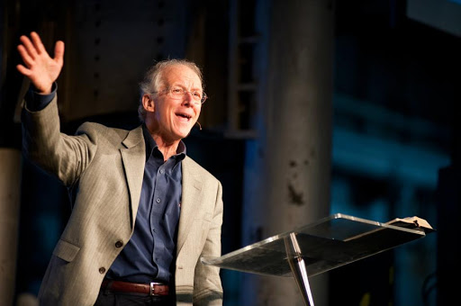
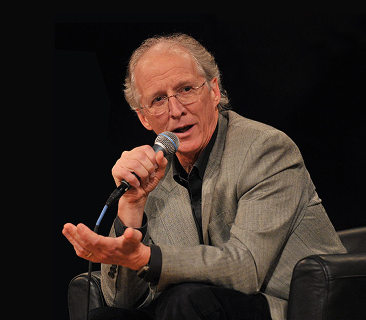
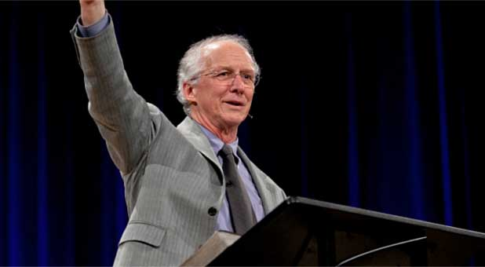

John Stephen Piper
THEOLOGIAN
JANUARY 11, 1946



HERE IS THE MINISTRY TIMELINE OF JOHN PIPER
- 1980 - Piper became pastor of Bethlehem Baptist Church in Minneapolis, Minnesota, where he ministered until March 31, 2013. Piper hit the evangelical scene after the publication of his book Desiring God: Meditations of a Christian Hedonist
- 1994 - He founded Desiring God Ministries, with the aim of "spreading a passion for the supremacy of God in all things for the joy of all peoples through Jesus Christ.
- 2010 - A Festschrift was published in his honor. For the Fame of God's Name: Essays in Honor of John Piper2010, a Festschrift was published in his honor. For the Fame of God's Name: Essays in Honor of John Piper
- 2013 - Piper preached his final sermon as pastor of Bethlehem Baptist and announced in an open letter to the congregation that he and his family would be moving to Tennessee for at least a year so that the new leadership can develop a strategic vision for the church without distractions
Read more about John Piper
God created us for this: to live our lives in a way that makes him look more like the greatness and the beauty and the infinite worth that he really is. This is what it means to be created in the image of God. --John Piper
Created by Anthony Macariola